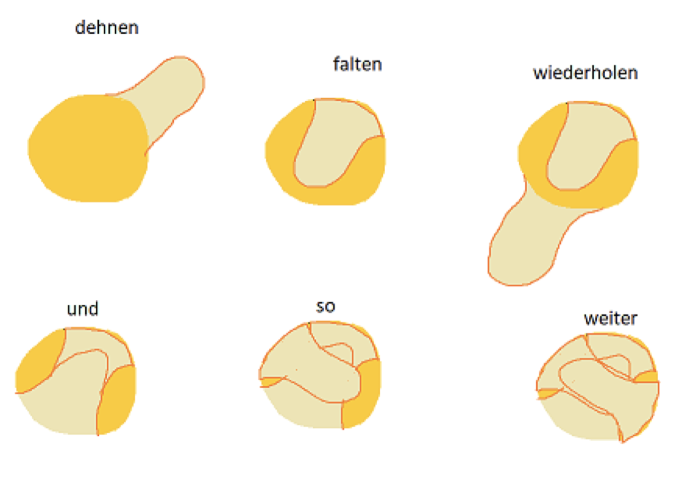

Baukasten
Alle Bausteine für eine neue Seite — jeweils als Beispiel und darunter der
Code zum Kopieren. Eine neue Rezeptseite entsteht, indem man
rezepte/vorlage.html kopiert und die passenden Blöcke von hier
einsetzt.
Die Bildpfade in den Beispielen gelten für Seiten im Hauptverzeichnis. In
rezepte/ steht überall ein ../ davor, also
../assets/bilder/….
Titel & Text
Seitenkopf
Steht zuoberst auf jeder Seite: Kicker, Titel, Lead. Der Kicker ist optional.
Roggenbrot
Ein kräftiges Mischbrot mit hohem Roggenanteil, gebacken im Gusseisentopf.
<div class="seitenkopf">
<span class="kicker">Rezept</span>
<h1>Roggenbrot</h1>
<p class="lead">
Ein kräftiges Mischbrot mit hohem Roggenanteil, gebacken im Gusseisentopf.
</p>
</div>Textabschnitt
Jeder inhaltliche Block. .abschnitt setzt den Abstand nach oben, .abschnitt--getrennt zusätzlich eine Trennlinie.
Über dieses Brot
Roggen bindet Wasser anders als Weizen. Ein Roggenteig wird deshalb nie so elastisch, wie man es vom Weizenbrot kennt — das ist normal.
Welches Mehl
Am besten frisch gemahlenes Roggenvollkornmehl. Je mehr Schalenanteile, desto aktiver die Fermentation.
<section class="abschnitt">
<h2>Über dieses Brot</h2>
<p>
Roggen bindet Wasser anders als Weizen. Ein Roggenteig wird deshalb nie
so elastisch, wie man es vom Weizenbrot kennt — das ist normal.
</p>
<h3>Welches Mehl</h3>
<p>
Am besten frisch gemahlenes Roggenvollkornmehl. <span class="gedaempft">Je
mehr Schalenanteile, desto aktiver die Fermentation.</span>
</p>
</section>Listen
Aufzählung
Normale Liste mit farbigem Aufzählungszeichen. Funktioniert als <ul> und als <ol>.
- Gusseisentopf mit Deckel
- Gärkörbchen, rund oder länglich
- Teigkarte
<ul class="liste">
<li>Gusseisentopf mit Deckel</li>
<li>Gärkörbchen, rund oder länglich</li>
<li>Teigkarte</li>
</ul>Checkliste
Für Faustregeln und Voraussetzungen — alles, was man abhaken kann.
- Sauerteig verdoppelt sich innert 2,5 Stunden.
- Zweimal aufgefrischt innert 24 Stunden.
- Zutaten auf Raumtemperatur.
<ul class="checkliste">
<li>Sauerteig verdoppelt sich innert 2,5 Stunden.</li>
<li>Zweimal aufgefrischt innert 24 Stunden.</li>
<li>Zutaten auf Raumtemperatur.</li>
</ul>Zutatenliste
Bezeichnung links, Menge rechts. .zutaten-oder trennt Alternativen. Mehrere <ul> hintereinander ergeben Gruppen.
- Roggenvollkornmehl300 g
- Weizenmehl Typ 550200 g
- oder
- Ruchmehl500 g
- Wasser390 g
- Sauerteig 100 % Wasseranteil100 g
- Salz12 g
<ul class="zutaten">
<li><span>Roggenvollkornmehl</span><span class="menge">300 g</span></li>
<li><span>Weizenmehl Typ 550</span><span class="menge">200 g</span></li>
<li class="zutaten-oder">oder</li>
<li><span>Ruchmehl</span><span class="menge">500 g</span></li>
</ul>
<ul class="zutaten">
<li><span>Wasser</span><span class="menge">390 g</span></li>
<li><span>Sauerteig <span class="gedaempft klein">100 % Wasseranteil</span></span><span class="menge">100 g</span></li>
<li><span>Salz</span><span class="menge">12 g</span></li>
</ul>Arbeitsschritte
Nummerierte Schritte. Jeder Schritt darf eine Überschrift, Text, Bilder und Panels enthalten. Die Nummern kommen aus CSS, nicht aus dem HTML.
-
Autolyse
Mehl und Wasser vermengen und 60 Minuten abgedeckt ruhen lassen.
-
Kneten
Sauerteig und Salz beigeben, 10 Minuten auf mittlerer Stufe kneten.
<ol class="schritte">
<li>
<h3>Autolyse</h3>
<p>Mehl und Wasser vermengen und 60 Minuten abgedeckt ruhen lassen.</p>
</li>
<li>
<h3>Kneten</h3>
<p>Sauerteig und Salz beigeben, 10 Minuten auf mittlerer Stufe kneten.</p>
</li>
</ol>Begriffsliste
Definitionsliste für Glossare — Begriff fett, Erklärung darunter.
- Stockgare
- Die erste Gärphase nach dem Kneten, meist bei Raumtemperatur.
- Stückgare
- Die zweite Gärphase, nachdem der Teig portioniert und geformt wurde.
<dl class="begriffe">
<dt>Stockgare</dt>
<dd>Die erste Gärphase nach dem Kneten, meist bei Raumtemperatur.</dd>
<dt>Stückgare</dt>
<dd>Die zweite Gärphase, nachdem der Teig portioniert und geformt wurde.</dd>
</dl>Panels
Panel: Info
Für Wissen und Erklärungen. Icon frei wählbar — 💡 💦 🍩 🎉 passen alle.
Sauerteig ist ein Mikroorganismus von wilden Hefebakterien, die in Symbiose mit Milchsäurebakterien leben.
<div class="panel panel--info">
<span class="panel-icon" aria-hidden="true">💡</span>
<div class="panel-inhalt">
<p>
Sauerteig ist ein Mikroorganismus von wilden Hefebakterien, die in
Symbiose mit Milchsäurebakterien leben.
</p>
</div>
</div>Panel mit Titel
Mit .panel-titel bekommt das Panel eine Überschrift. Funktioniert bei allen vier Varianten.
Bassinage
Das später beigegebene Wasser wird vom Mehl nicht mehr gleich gut aufgenommen und verdunstet im Ofen anders. Das ergibt eine offenere Krume.
<div class="panel panel--info">
<span class="panel-icon" aria-hidden="true">💡</span>
<p class="panel-titel">Bassinage</p>
<div class="panel-inhalt">
<p>
Das später beigegebene Wasser wird vom Mehl nicht mehr gleich gut
aufgenommen und verdunstet im Ofen anders. Das ergibt eine offenere Krume.
</p>
</div>
</div>Panel: Tipp
Für Erfahrungswerte und Kniffe. Im PDF war das durchgehend das 📌.
Tipp
Lagere den Teig in einem Gefäss, an dem sich die Volumenänderung ablesen lässt — zum Beispiel einem rechteckigen Tupperware.
<div class="panel panel--tipp">
<span class="panel-icon" aria-hidden="true">📌</span>
<p class="panel-titel">Tipp</p>
<div class="panel-inhalt">
<p>
Lagere den Teig in einem Gefäss, an dem sich die Volumenänderung ablesen
lässt — zum Beispiel einem rechteckigen Tupperware.
</p>
</div>
</div>Panel: Achtung
Für alles, was schiefgehen kann. Der Titel gehört dazu: die Farbe allein soll die Warnung nie tragen müssen.
Achtung
Wird der Teig beim Kneten wärmer als 28 Grad, kann sich das Glutennetzwerk zurückentwickeln.
<div class="panel panel--achtung">
<span class="panel-icon" aria-hidden="true">🚨</span>
<p class="panel-titel">Achtung</p>
<div class="panel-inhalt">
<p>
Wird der Teig beim Kneten wärmer als 28 Grad, kann sich das Glutennetzwerk
zurückentwickeln.
</p>
</div>
</div>Panel: Zutaten
Für kurze Aufzählungen, die im Text hervorstechen sollen.
- Mehl
- Wasser
- Treibmittel
- Salz
<div class="panel panel--zutaten">
<span class="panel-icon" aria-hidden="true">📃</span>
<div class="panel-inhalt">
<ul class="liste">
<li>Mehl</li>
<li>Wasser</li>
<li>Treibmittel</li>
<li>Salz</li>
</ul>
</div>
</div>Zitat
Zitat
Für Merksätze und Zitate. <cite> ist optional und bekommt automatisch einen Gedankenstrich davor.
Der Teig ist bereit, sobald er sich innert 2,5 Stunden verdoppelt.
Faustregel
<blockquote class="zitat">
<p>Der Teig ist bereit, sobald er sich innert 2,5 Stunden verdoppelt.</p>
<cite>Faustregel</cite>
</blockquote>Tabelle
Tabelle
Der Wrapper .tabelle-rollen macht breite Tabellen auf dem Handy seitlich scrollbar, ohne dass die ganze Seite wandert.
| Eigenschaft | 50 % Wasser | 100 % Wasser |
|---|---|---|
| Pflege | Aufwendig | Einfach |
| Treibkraft | Konstant und lange | Schnell und kürzer |
<div class="tabelle-rollen">
<table class="tabelle">
<thead>
<tr>
<th scope="col"><span class="visuell-versteckt">Eigenschaft</span></th>
<th scope="col">50 % Wasser</th>
<th scope="col">100 % Wasser</th>
</tr>
</thead>
<tbody>
<tr>
<th scope="row">Pflege</th>
<td>Aufwendig</td>
<td>Einfach</td>
</tr>
<tr>
<th scope="row">Treibkraft</th>
<td>Konstant und lange</td>
<td>Schnell und kürzer</td>
</tr>
</tbody>
</table>
</div>Kennzahlen
Kennzahlen
Die Eckdaten eines Rezepts. Die Kacheln verteilen sich automatisch auf die verfügbare Breite.
- Hydration 78%
- Ofen 250°C
- Backzeit 45Min.
- Gesamt 20Std.
<ul class="kennzahlen">
<li>
<span class="kennzahl-label">Hydration</span>
<span class="kennzahl-wert">78<small>%</small></span>
</li>
<li>
<span class="kennzahl-label">Ofen</span>
<span class="kennzahl-wert">250<small>°C</small></span>
</li>
<li>
<span class="kennzahl-label">Backzeit</span>
<span class="kennzahl-wert">45<small>Min.</small></span>
</li>
<li>
<span class="kennzahl-label">Gesamt</span>
<span class="kennzahl-wert">20<small>Std.</small></span>
</li>
</ul>Medien
Bild mit Legende
width und height immer angeben — sonst springt das Layout beim Laden. loading="lazy" für alles unterhalb des ersten Bildschirms.

<figure>
<img src="assets/bilder/fenstertest.jpg"
alt="Zwei Hände spannen ein dünnes Teigfenster auf."
width="1600" height="868" loading="lazy">
<figcaption>
Bestanden: Der Teig lässt sich hauchdünn aufspannen, ohne zu reissen.
</figcaption>
</figure>Bilder nebeneinander
Zwei oder mehr Bilder in einer Reihe. Auf schmalen Bildschirmen stapeln sie sich automatisch untereinander.


<figure>
<div class="bildpaar">
<img src="assets/bilder/dehnen-falten.jpg" alt="Teig wird angehoben und gefaltet."
width="1500" height="1600" loading="lazy">
<img src="assets/bilder/dehnen-falten-schema.png" alt="Schema des Dehnens und Faltens."
width="1400" height="963" loading="lazy">
</div>
<figcaption>Links in der Schüssel, rechts als Schema.</figcaption>
</figure>Karten
Kartenraster
Für Übersichtsseiten. Die ganze Karte ist klickbar — der Link im Titel legt sich per CSS über die gesamte Fläche.
-

Roggenbrot
Kräftiges Mischbrot aus dem Gusseisentopf.
-
Focaccia
Flach, salzig, mit viel Olivenöl.
<ul class="raster">
<li class="karte">
<img src="assets/bilder/platzhalter.svg" alt="" width="800" height="600">
<div class="karte-text">
<h3><a href="#raster">Roggenbrot</a></h3>
<p>Kräftiges Mischbrot aus dem Gusseisentopf.</p>
<p class="karte-meta"><span>78 % Hydration</span><span>ca. 20 Std.</span></p>
</div>
</li>
<li class="karte">
<img src="assets/bilder/platzhalter.svg" alt="" width="800" height="600">
<div class="karte-text">
<h3><a href="#raster">Focaccia</a></h3>
<p>Flach, salzig, mit viel Olivenöl.</p>
<p class="karte-meta"><span>85 % Hydration</span><span>ca. 6 Std.</span></p>
</div>
</li>
</ul>Visualisierungen
Bäckerprozente
Balkendiagramm, alle Zutaten im Verhältnis zum Mehl. --bp-max am Container ist der grösste Wert (in der Regel 100), --pct an der Zeile der Wert der Zutat. Jeder Wert steht auch als Text daneben.
Bäckerprozente
Alle Zutaten im Verhältnis zum Mehl (500 g = 100 %)
<figure class="viz">
<p class="viz-titel">Bäckerprozente</p>
<p class="viz-unterzeile">Alle Zutaten im Verhältnis zum Mehl (500 g = 100 %)</p>
<div class="bp" style="--bp-max: 100">
<div class="bp-zeile" style="--pct: 100">
<span class="bp-name">Mehl</span>
<span class="bp-spur"><span class="bp-balken" title="Mehl · 100 %"></span></span>
<span class="bp-wert">100 %</span>
</div>
<div class="bp-zeile" style="--pct: 78">
<span class="bp-name">Wasser</span>
<span class="bp-spur"><span class="bp-balken" title="Wasser · 78 %"></span></span>
<span class="bp-wert">78 %</span>
</div>
<div class="bp-zeile" style="--pct: 20">
<span class="bp-name">Sauerteig</span>
<span class="bp-spur"><span class="bp-balken" title="Sauerteig · 20 %"></span></span>
<span class="bp-wert">20 %</span>
</div>
<div class="bp-zeile" style="--pct: 2.4">
<span class="bp-name">Salz</span>
<span class="bp-spur"><span class="bp-balken" title="Salz · 2,4 %"></span></span>
<span class="bp-wert">2,4 %</span>
</div>
</div>
<figcaption>Kurze Einordnung, was man aus dem Diagramm lesen soll.</figcaption>
</figure>Zeitplan
Gestapelter Balken über den ganzen Ablauf. --gesamt ist die Gesamtdauer in Minuten, --dauer die Dauer der Phase, data-stufe von 1 bis 6 die Farbe (früh hell, spät dunkel). Beschriftet wird in der Legende, damit im Balken nichts abgeschnitten wird.
Vom Anrühren bis aus dem Ofen
Rund 16 Stunden, davon etwa 45 Minuten aktive Arbeit
- Autolyse60 Min.
- Kneten20 Min.
- Stockgare3 Std.
- Kaltgare10 Std.
- Formen & Stückgare1,5 Std.
- Backen35 Min.
<figure class="viz">
<p class="viz-titel">Vom Anrühren bis aus dem Ofen</p>
<p class="viz-unterzeile">Rund 16 Stunden, davon etwa 45 Minuten aktive Arbeit</p>
<div class="zeitplan" style="--gesamt: 985">
<div class="zp-spur">
<span class="zp-phase" data-stufe="1" style="--dauer: 60" title="Autolyse · 60 Min."></span>
<span class="zp-phase" data-stufe="2" style="--dauer: 20" title="Kneten · 20 Min."></span>
<span class="zp-phase" data-stufe="3" style="--dauer: 180" title="Stockgare · 3 Std."></span>
<span class="zp-phase" data-stufe="4" style="--dauer: 600" title="Kaltgare · 10 Std."></span>
<span class="zp-phase" data-stufe="5" style="--dauer: 90" title="Formen und Stückgare · 1,5 Std."></span>
<span class="zp-phase" data-stufe="6" style="--dauer: 35" title="Backen · 35 Min."></span>
</div>
<ol class="zp-legende">
<li><span class="zp-punkt" data-stufe="1" aria-hidden="true"></span><div><b>Autolyse</b><span>60 Min.</span></div></li>
<li><span class="zp-punkt" data-stufe="2" aria-hidden="true"></span><div><b>Kneten</b><span>20 Min.</span></div></li>
<li><span class="zp-punkt" data-stufe="3" aria-hidden="true"></span><div><b>Stockgare</b><span>3 Std.</span></div></li>
<li><span class="zp-punkt" data-stufe="4" aria-hidden="true"></span><div><b>Kaltgare</b><span>10 Std.</span></div></li>
<li><span class="zp-punkt" data-stufe="5" aria-hidden="true"></span><div><b>Formen & Stückgare</b><span>1,5 Std.</span></div></li>
<li><span class="zp-punkt" data-stufe="6" aria-hidden="true"></span><div><b>Backen</b><span>35 Min.</span></div></li>
</ol>
</div>
<figcaption>Kurze Einordnung, was man aus dem Diagramm lesen soll.</figcaption>
</figure>Navigation
Inhaltsverzeichnis
Für lange Seiten. Die Ziele sind die ids der Abschnitte.
<nav class="inhalt" aria-label="Inhalt dieser Seite">
<h2>Auf dieser Seite</h2>
<ol>
<li><a href="#inhalt">Zutaten</a></li>
<li><a href="#inhalt">Zeitplan</a></li>
<li><a href="#inhalt">Vorgehen</a></li>
<li><a href="#inhalt">Varianten</a></li>
</ol>
</nav>Vor und zurück
Steht ganz am Ende einer Seite, direkt vor dem Fuss.
<nav class="blaettern" aria-label="Weitere Kapitel">
<a href="#blaettern"><small>Zurück</small>Sauerteig</a>
<a class="weiter" href="#blaettern"><small>Weiter</small>Baguette</a>
</nav>